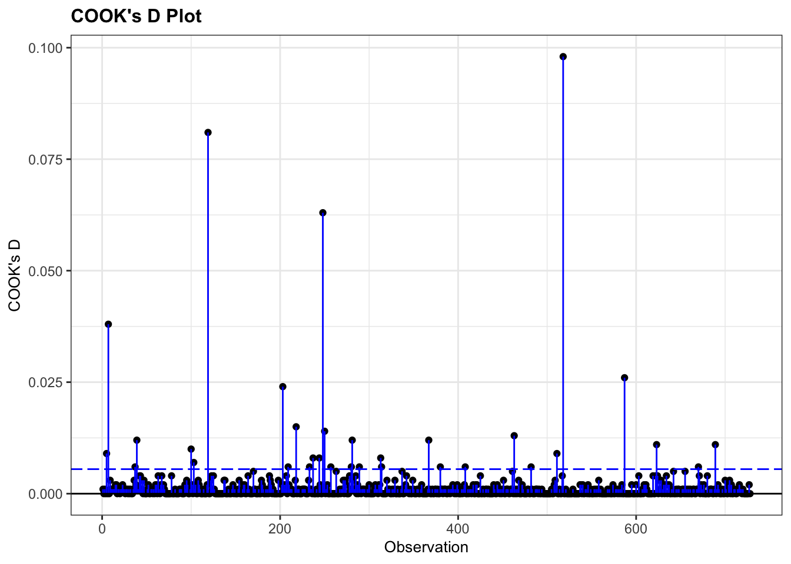

library(ggResidpanel)11 Checking assumptions
Although generalised linear models do allow us to relax certain assumptions compared to standard linear models (linearity, equality of variance of residuals, and normality of residuals).
However, we cannot relax all of them. This section of the materials will talk through the important assumptions for GLMs, and how to assess them.
11.1 Libraries and functions
Click to expand
from scipy.stats import *11.2 Assumption 1: Distribution of response variable
Although we don’t expect our response variable \(y\) to be continuous and normally distributed (as we did in linear modelling), we do still expect its distribution to come from the “exponential family” of distributions.
The exponential family contains the following distributions, among others:
- normal
- exponential
- Poisson
- Bernoulli
- binomial (for fixed number of trials)
- chi-squared
You can use a histogram to visualise the distribution of your response variable, but it is typically most useful just to think about the nature of your response variable. For instance, binary variables will follow a Bernoulli distribution, proportional variables follow a binomial distribution, and most count variables will follow a Poisson distribution.
If you have a very unusual variable that doesn’t follow one of these exponential family distributions, however, then a GLM will not be an appropriate choice. In other words, a GLM is not necessarily a magic fix!
11.3 Assumption 2: Correct link function
A closely-related assumption to assumption 1 above, is that we have chosen the correct link function for our model.
If we have done so, then there should be a linear relationship between our transformed model and our response variable; in other words, if we have chosen the right link function, then we have correctly “linearised” our model.
11.4 Assumption 3: Independence
We expect that the each observation or datapoint in our sample is independent of all the others. Specifically, we expect that our set of \(y\) response variables are independent of one another.
For this to be true, we have to make sure:
- that we aren’t treating technical replicates as true/biological replicates;
- that we don’t have observations/datapoints in our sample that are artificially similar to each other (compared to other datapoints);
- that we don’t have any nuisance/confounding variables that create “clusters” or hierarchy in our dataset;
- that we haven’t got repeated measures, i.e., multiple measurements/rows per individual in our sample
There is no diagnostic plot for assessing this assumption. To determine whether your data are independent, you need to understand your experimental design.
You might find this page useful if you’re looking for more information on what counts as truly independent data.
11.5 Good science: No influential observations
As with linear models, though this isn’t always considered a “formal” assumption, we do want to ensure that there aren’t any datapoints that are overly influencing our model.
A datapoint is overly influential, i.e., has high leverage, if removing that point from the dataset would cause large changes in the model coefficients. Datapoints with high leverage are typically those that don’t follow the same general “trend” as the rest of the data.
The easiest way to check for overly influential points is to construct a Cook’s distance plot.
Let’s try that out, using the diabetes example dataset.
diabetes <- read_csv("data/diabetes.csv")Rows: 728 Columns: 3
── Column specification ────────────────────────────────────────────────────────
Delimiter: ","
dbl (3): glucose, diastolic, test_result
ℹ Use `spec()` to retrieve the full column specification for this data.
ℹ Specify the column types or set `show_col_types = FALSE` to quiet this message.glm_dia <- glm(test_result ~ glucose * diastolic,
family = "binomial",
data = diabetes)diabetes_py = pd.read_csv("data/diabetes.csv")
model = smf.glm(formula = "test_result ~ glucose * diastolic",
family = sm.families.Binomial(),
data = diabetes_py)
glm_dia_py = model.fit()Once our model is fitted, we can fit a Cook’s distance plot:
resid_panel(glm_dia, plots = "cookd")
Good news - there don’t appear to be any overly influential points!
11.6 Dispersion
Another thing that we want to check, primarily in Poisson regression, is whether our dispersion parameter is correct.
First, let’s unpack what dispersion is!
Dispersion, in statistics, is a general term to describe the variability, scatter, or spread of a distribution. Variance is a common measure of dispersion that hopefully you are familiar with.
In a normal distribution, the mean (average) and the variance (dispersion) are independent of each other; we need both numbers, or parameters, to understand the shape of the distribution.
Other distributions, however, require different parameters to describe them in full. For a Poisson distribution, we need just one parameter \(lambda\), which captures the expected rate of occurrences/expected count. The mean and variance of a Poisson distribution are actually expected to be the same.
In the context of a model, you can think about the dispersion as the degree to which the data are spread out around the model curve. A dispersion parameter of 1 means the data are spread out exactly as we expect; <1 is called underdispersion; and >1 is called overdispersion.
11.6.2 Checking the dispersion parameter
The easiest way to check dispersion in a model is to calculate the ratio of the residual deviance to the residual degrees of freedom.
Let’s practice doing this using a Poisson regression fitted to the islands dataset that you saw earlier in the course.
islands <- read_csv("data/islands.csv")Rows: 35 Columns: 2
── Column specification ────────────────────────────────────────────────────────
Delimiter: ","
dbl (2): species, area
ℹ Use `spec()` to retrieve the full column specification for this data.
ℹ Specify the column types or set `show_col_types = FALSE` to quiet this message.glm_isl <- glm(species ~ area,
data = islands, family = "poisson")islands_py = pd.read_csv("data/islands.csv")
model = smf.glm(formula = "species ~ area",
family = sm.families.Poisson(),
data = islands_py)
glm_isl_py = model.fit()If we take a look at the model output, we can see the two quantities we care about - residual deviance and residual degrees of freedom:
summary(glm_isl)
Call:
glm(formula = species ~ area, family = "poisson", data = islands)
Coefficients:
Estimate Std. Error z value Pr(>|z|)
(Intercept) 4.241129 0.041322 102.64 <2e-16 ***
area 0.035613 0.001247 28.55 <2e-16 ***
---
Signif. codes: 0 '***' 0.001 '**' 0.01 '*' 0.05 '.' 0.1 ' ' 1
(Dispersion parameter for poisson family taken to be 1)
Null deviance: 856.899 on 34 degrees of freedom
Residual deviance: 30.437 on 33 degrees of freedom
AIC: 282.66
Number of Fisher Scoring iterations: 3print(glm_isl_py.summary()) Generalized Linear Model Regression Results
==============================================================================
Dep. Variable: species No. Observations: 35
Model: GLM Df Residuals: 33
Model Family: Poisson Df Model: 1
Link Function: Log Scale: 1.0000
Method: IRLS Log-Likelihood: -139.33
Date: Thu, 13 Jun 2024 Deviance: 30.437
Time: 10:45:27 Pearson chi2: 30.3
No. Iterations: 4 Pseudo R-squ. (CS): 1.000
Covariance Type: nonrobust
==============================================================================
coef std err z P>|z| [0.025 0.975]
------------------------------------------------------------------------------
Intercept 4.2411 0.041 102.636 0.000 4.160 4.322
area 0.0356 0.001 28.551 0.000 0.033 0.038
==============================================================================The residual deviance is 30.437, on 33 residual degrees of freedom. All we need to do is divide one by the other to get our dispersion parameter.
glm_isl$deviance/glm_isl$df.residual[1] 0.922334print(glm_isl_py.deviance/glm_isl_py.df_resid)0.9223340414458532The dispersion parameter here is 0.922. That’s pretty good - not far off 1 at all.
But how can we check whether it is significantly different from 1?
Well, you’ve actually already got the knowledge you need to do this, from the previous course section on significance testing. Specifically, the chi-squared goodness-of-fit test can be used to check whether the dispersion is within sensible limits.
You may have noticed that the two values we’re using for the dispersion parameter are the same two numbers that we used in those chi-squared tests. For this Poisson regression fitted to the islands dataset, that goodness-of-fit test would look like this:
1 - pchisq(glm_isl$deviance, glm_isl$df.residual)[1] 0.595347pvalue = chi2.sf(glm_isl_py.deviance, glm_isl_py.df_resid)
print(pvalue)0.5953470127463187If our chi-squared goodness-of-fit test returns a large (insignificant) p-value, as it does here, that tells us that we don’t need to worry about the dispersion.
If our chi-squared goodness-of-fit test returned a small, significant p-value, this would tell us our model doesn’t fit the data well. And, since dispersion is all about the spread of points around the model, it makes sense that these two things are so closely related!
11.7 Summary
While generalised linear models make fewer assumptions than standard linear models, we do still expect certain things to be true about the model and our variables for GLMs to be valid. Checking most of these assumptions requires understanding your dataset, and diagnostic plots play a less heavy role.
Key points
- For a generalised linear model, we assume that we have chosen the correct link function, that our response variable follows a distribution from the exponential family, and that our data are independent.
- To assess these assumptions, we need to understand our dataset and variables.
- We can also use visualisation to determine whether we have overly influential (high leverage) data points.
- For Poisson regression, we should also investigate the dispersion parameter of our model, which we expect to be close to 1.